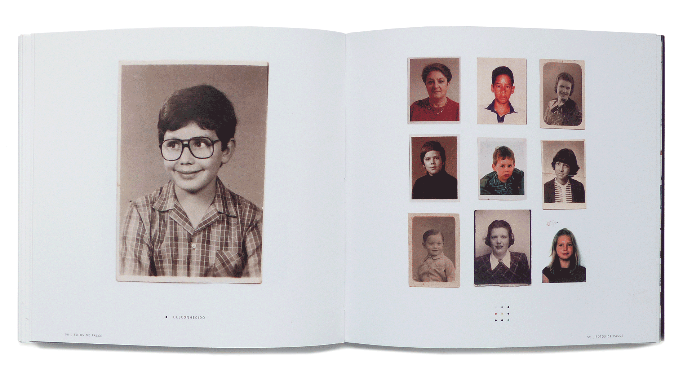
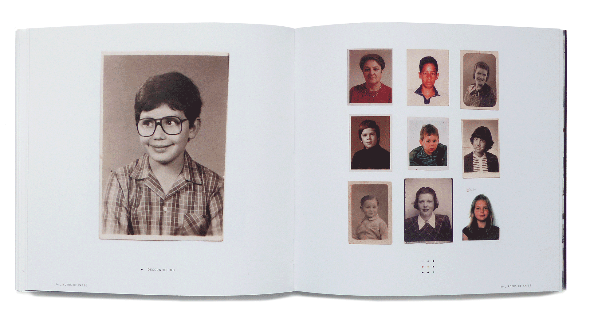
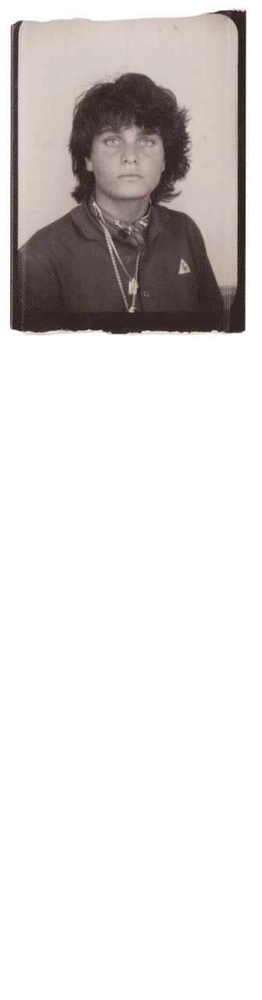

passport photos
collection and editorial design,
fbaup 2020.
 

Throughout my first year Communication Design, we had an ongoing project: to create a collection.
Working with a colleague (Beatriz Rainha) and inspired by the film “Le fabuleux destin d’Amélie Poulain” by Jean Pierre Jeunet, we chose as subject the passport photo, basic and universal, that is renewed almost every year and demonstrates the passage of time.
Over the course of the academic year, we have collected more than 500 photographs in this format, some of which are tens of years old and of sentimental value, from family, friends, university colleagues and strangers. This format allowed us to find family connections, physical similarities and growth.
Execution with Beatriz Rainha.
